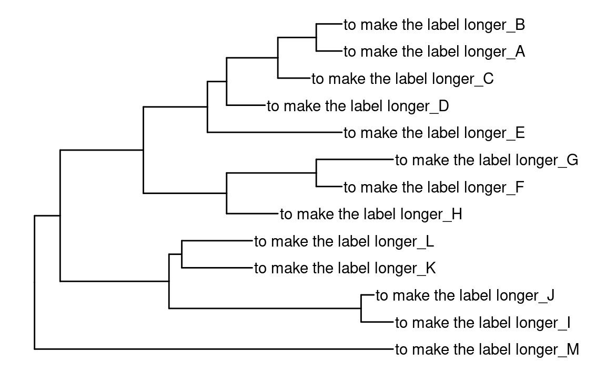

suppressMessages(library(tidyverse))
suppressMessages(library(treeio))
suppressMessages(library(ggtree))
# library(ggimage)
nwk <- system.file("extdata", "sample.nwk", package = "treeio")
tree <- treeio::read.tree(nwk)
tree$node.label <- c("root", paste("node", 2:treeio::Nnode(tree)))
p <- ggtree(tree)ggtree–通用函数
ggtree
本节是对前四节的补充，它们大多是一些通用的函数。
-
%<+%：类似于full_join()，但是直接在ggplot对象中添加新的数据 -
hexpand(),vexpand()：延长树图的宽度和高度 -
get_taxa_name()：获取ggplot图中taxa的顺序和名称 -
label_pad()：设置label的间隔 -
identify()：获取ggplot对象中的数据
加载一颗基本树
%<+%
%<+% 固定使用数据第一列与p$data中的label列进行匹配。
fortify(tree)
#> # A tbl_tree abstraction: 25 × 9
#> # which can be converted to treedata or phylo
#> # via as.treedata or as.phylo
#> parent node branch.length label isTip x y branch angle
#> <int> <int> <dbl> <chr> <lgl> <dbl> <dbl> <dbl> <dbl>
#> 1 20 1 4 A TRUE 48 12 46 332.
#> 2 20 2 4 B TRUE 48 13 46 360
#> 3 19 3 5 C TRUE 43 11 40.5 305.
#> 4 18 4 6 D TRUE 36 10 33 277.
#> 5 17 5 21 E TRUE 48 9 37.5 249.
#> 6 22 6 4 F TRUE 48 7 46 194.
#> # ℹ 19 more rows
d <- data.frame(tip = LETTERS[1:13], value = 1:treeio::Ntip(tree))
(p %<+% d)$data
#> # A tbl_tree abstraction: 25 × 10
#> # which can be converted to treedata or phylo
#> # via as.treedata or as.phylo
#> parent node branch.length label isTip x y branch angle value
#> <int> <int> <dbl> <chr> <lgl> <dbl> <dbl> <dbl> <dbl> <int>
#> 1 20 1 4 A TRUE 48 12 46 332. 1
#> 2 20 2 4 B TRUE 48 13 46 360 2
#> 3 19 3 5 C TRUE 43 11 40.5 305. 3
#> 4 18 4 6 D TRUE 36 10 33 277. 4
#> 5 17 5 21 E TRUE 48 9 37.5 249. 5
#> 6 22 6 4 F TRUE 48 7 46 194. 6
#> # ℹ 19 more rows
hexpand(), vexpand()
text的长度在ggplot中不被考虑，很多时候文本注释信息会在图中显示不全被截断。
当使用coord_cartesian(clip = "off")时，超出边界的文本不会被裁剪，但仍然可能仍然无法显示。需要将x，y轴延展。
tree2 <- tree
tree2$tip.label <- paste0('to make the label longer_', tree2$tip.label)
ggtree::ggtree(tree2) + geom_tiplab() + hexpand(.4)
get_taxa_name()
获取taxa名称，顺序以树图中展示的为准。
get_taxa_name(p)
#> [1] "B" "A" "C" "D" "E" "G" "F" "H" "L" "K" "J" "I" "M"
get_taxa_name(p, node = "node 12")
#> [1] "L" "K"label_pad()
用来将label对齐，不足的部分使用某个字符填充。
chr <- c("a", "b", "cccccccc")
tibble::tibble(
label = chr,
label_pad = label_pad(label, pad = "."),
label_pad_2 = label_pad(label, justify = "left", pad = ".")
)
#> # A tibble: 3 × 3
#> label label_pad label_pad_2
#> <chr> <chr> <chr>
#> 1 a .......a a
#> 2 b .......b b
#> 3 cccccccc cccccccc ccccccccidentify()
使用identify()函数，可以手动选择注释clade或tip（可能需要使用Rstudio）。